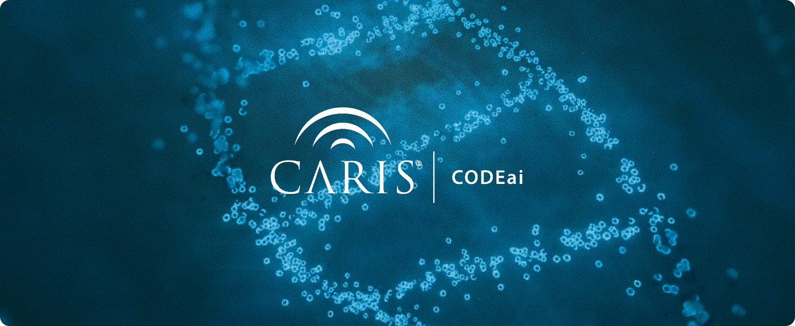
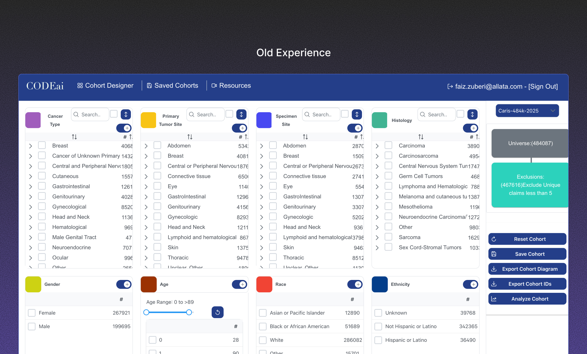
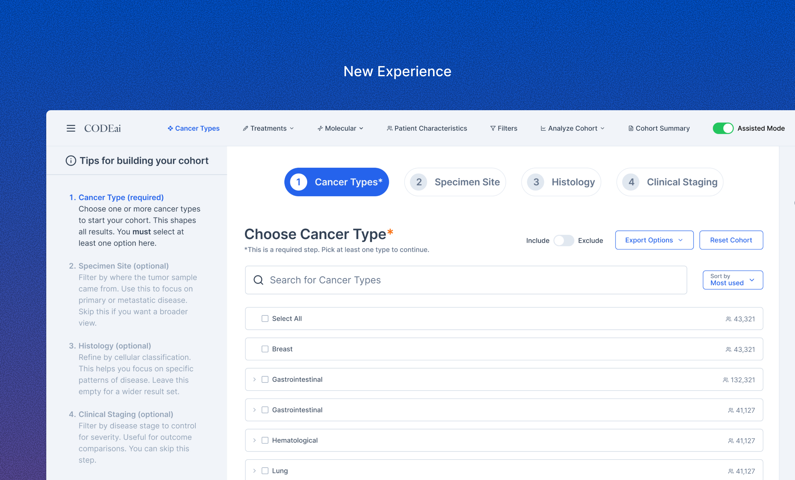
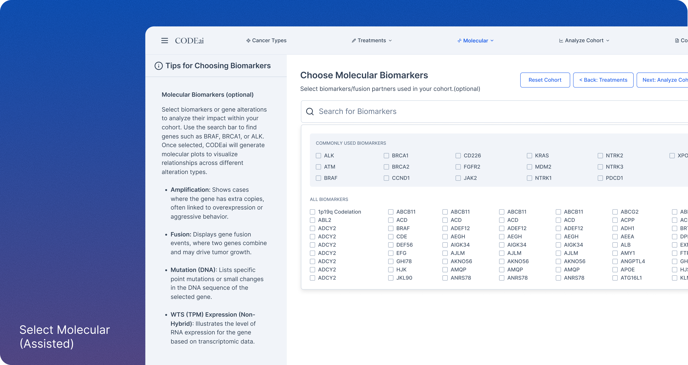
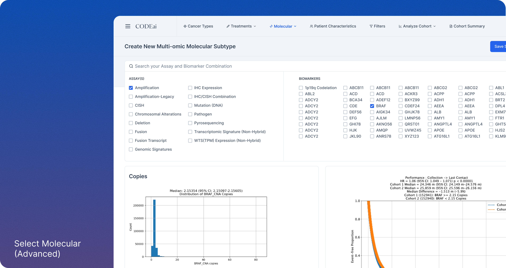

Caris Life Sciences: CODEai
Redesigning cohort analysis for researchers and clinicians.


Overview
CODEai is Caris Life Sciences' real-world clinico-genomic data platform, combining large-scale molecular data with treatment and outcome information to support research, clinical decisions and drug development. Caris wanted to open it up to biopharma, research partners and internal clinical teams. As UX lead, I redesigned the cohort analysis and visualization flows. The goal was a tool that's easy to use without losing its analytical power.

Problem
The interface was cluttered and dated, with inconsistent controls, unclear flows and a steep learning curve that hit new users and non-technical clinicians hardest. It gave users zero guidance, so they fell back on manual workarounds. Users also lacked a clear mental model of how the platform structured its data. That made it hard to know where to start.
Research
Stakeholders had already interviewed the two main user groups, researchers and clinicians, before I joined. A data scientist said, "I spend too much time scrolling to find the right biomarkers and assays. Search is not intuitive and half the time doesn't even work." A clinician said, "I actually had no idea on how to begin or what to do. I can't explain what it's lacking but it's just not clear on what I need to do." Those two quotes describe two different users with two different problems. One needed speed and control, the other needed a starting point.
The strategic call: two modes
The original ask was a visual refresh, making CODEai look "slick and pretty." I pushed for a structural change instead: an Assisted mode that walks users through building a cohort step by step, and an Advanced mode that gives power users full control. That shifted the project from a visual refresh to a redesign of how people build cohorts. Neither group had to compromise for the other.


Execution
I designed a cohesive architecture for filters, results, visualizations and export workflows. I optimized the key flows, including cohort creation, building custom therapies and fast switching between modes, to cut friction and error risk. A tips panel gives clinicians and researchers guidance right where they need it. The visual layer got a modern treatment, with better typography, a clear color hierarchy and responsive layouts that match the brand's premium positioning.
Retrospective
I worked with clinicians, product managers and engineers who were open-minded and collaborative, on a tool that matters to cancer research. Stakeholder alignment was clear, the research foundation was strong, and prototype-to-test iterations moved fast.
What I'd change is how close I got to users. I relied on a stakeholder as an intermediary instead of hearing from users firsthand, and that direct connection would have surfaced subtler mental models and pain points earlier. Next time, I'd be in the room.